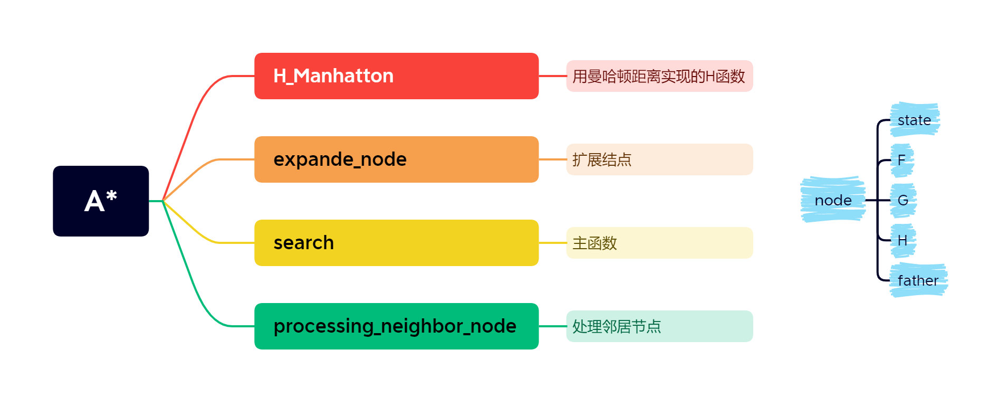

Astar算法题目
Astar算法题目
lvzhipinA*算法
在具体介绍每个问题的实现之前，先简要阐述 A* 算法某些名词的含义：
open list：一个最小堆，存放目前可以展开的节点。（最小堆可以加速找到 F 值最小节点）
close list：一个列表，存放已经展开过的节点。
H 值：表示该节点到终点开销的估计值，是一个人为定义的启发式函数。
G 值：表示从起点到该节点开销的实际值，是可以实际计算出来的。
F 值：G + H
源代码函数介绍：

Q1.冰雪魔方的冰霜之道
1. 输出答案
每一行对应一个测试样例
1 | 1 |
2. H 函数
选择的 H 函数为曼哈顿距离：该状态中数字（0除外）到目标状态数字的曼哈顿距离之和
示例介绍
1 | 1 * * * 1 * * * * |
Admissibility证明
定义状态 A 为某个未复原的状态
由于每次移动冰块最多只能复原一个冰块，所以容易想到复原 A 整个过程中移动冰块的次数至少也要有 $H(A)$ 次。所以 A 到目标状态的实际开销 $H^*(A) > H(A)$ ，Admissibility 得证。
Consistency证明
定义状态 A 为某个未复原的状态，A 经过一次移动后到达状态 C。
一次移动可能导致被移动的冰块的到目标位置的曼哈顿距离减1或加1，所以 $H(C) \ge H(A) -1$。已知 A 到 C 的开销 $c(A,C) = 1$，所以易得$H(A) - H(C) \le 1$，Consistency 得证。
3. 算法实现介绍
定义以下函数
expande_node(node): 扩展某个节点。将某个节点的邻居节点全部列举（可能有2-4个），然后一一调用process_neighbor_node(node)。
process_neighbor_node(node)：处理该邻居节点。进行如下操作
如果邻居节点的状态在close list，则不进行任何操作；
如果邻居节点的状态在open list，则查看该邻居节点的 F 值是否更小。
- 如果更小，则更新open list中该节点的 F 值和修改父节点。
- 否则，不进行任何操作。
- 如果邻居节点既不在close list，又不在open list。则将该节点放入open list。
A* 算法的运行过程
1 | 初始化: open_list = heap([]), close_list = [] |
4. 代码解释
具体的代码在源文件中可以查看，已经写了详尽的注释，不再一一展示。
这里我想展示一下如何判断空冰块（0）可以移动的方向。
首先介绍我存储状态的方式。我用一个列表存放所有冰块（如[1,5,0,7,3,2,6,4,8]）的顺序，其中0代表空冰块。
容易想到一个空冰块最多可能有四种方向可以移动（上左下右），我们可以一一判断是否能往 上/左/下/右 进行移动。
1 | condition = [zero_idx-3, zero_idx%3-1, 5-zero_idx, 1-zero_idx%3] |
设置如上四个条件（其中 zero_idx 表示空冰块在列表中的索引），分别表示空冰块能否向 上/左/下/右 移动，如果条件大于等于0，则表示可以移动。
上/下：
对于上，只有第一行（0，1，2）不能向上移动，所以用 zero_idx-3 作为能否向上移动的条件。
下同理
左/右：
对于左，只有第一列（0，3，6）不能向上移动，他们的通性是都是三的倍数，所以用 zero_idx%3-1 作为能否向右移动的条件。
右同理
5. 探索性分析
在本题的 H 函数的设置中，除了使用曼哈顿距离外，也可以使用汉明距离（位置错误冰块的数量），而且容易证明该函数满足 Consistency 条件。
由于不同 H 函数的选择，可能会导致探索过程迟缓（展开节点的数量增多），下面统计了两个 H 函数对于不同示例搜索展开的节点数量。
| 距离目标的步数 | 曼哈顿距离 | 汉明距离 |
|---|---|---|
| 10 | 39 | 80 |
| 15 | 231 | 670 |
| 20 | 770 | 2782 |
从表格中可以看出，使用更好，更贴合实际的启发式函数时，A 的性能更好。虽然只要满足 Consistency 条件的 H 函数都可以使 A\ 找出最优解，但是构造更好的 H 函数可以大大提高搜索的性能。
Q2.杰克的金字塔探险
1. 输出答案：
每一块对应一个测试样例
1 | 3 |
1 | 4 |
1 | 5 |
1 | 4 |
1 | 5 |
2. H 函数
在本题中，如果简单的与到目标房间号的差值作为 H 值，对于大部分路线是合适的，但是存在某些“特殊的捷径”。比如在第二个测试用例中，存在一条从房间号3到房间号6的路线，长度只有 1。这显然会导致 H 函数不满足 Consistency。为了考虑到某些捷径，我是用类似”反向传播“的方式遍历所有边，生成一个H_table。具体方式如下：
- 首先，令 H_table 初始化为到目标房间号的差值。以第二个测试为例，初始化后的 H_table 为
| 1 | 2 | 3 | 4 | 5 | 6 |
|---|---|---|---|---|---|
| 5 | 4 | 3 | 2 | 1 | 0 |
- 以每条路径的出口房间号降序排序所有路径
排序结束后应该是如下形式，每一行三个数字分别表示入口，出口，花销。
1 | 3 6 1 |
然后依次遍历所有路径，更新 H_table 中路径入口的 H 值：
H_table[room_in] = min(H_table[room_in], H_table[room_out] + line_spending)这样就可以将所有不满足 Consistency 条件的 H 值全部更改成符合条件的。
比如第一条路径，(3,6,1)。因为 H_table 记录的 H_table[3] 为 3，而有一条 3 到 6 的路径长度为 1，为了满足 Consistency 条件，将 H[H_table] 更新为 1 。
遍历结束后，更新后的 H_table 中的 H 值每个都符合 Consistency 条件。
| 1 | 2 | 3 | 4 | 5 | 6 |
|---|---|---|---|---|---|
| 4 | 4 | 1 | 2 | 1 | 0 |
最后，为什么叫这步操作为”反向传播“呢？因为经过排序再遍历路径时，通过先确定靠近终点房间的 H 值（终点的 H 值为 0），然后利用这些靠近终点的 H 值更新那些靠近起点的 H 值。这种计算方式让我想起了神经网络中的”反向传播“。
Consistency证明
由于遍历过所有的路径，并且已经更改过所有不符合 Consistency 条件的 H 值，这个 H_table 自然满足 Consistency 。并且 Consistency 可以推出 Admissibility 条件，所以该 H 函数是合适的。
3. 算法实现介绍
算法实现整体上与第一题类似
1 | 初始化: open_list = heap([]), close_list = [] |
但是 expande_node 略有不同。
由于该题要求找到最短的多条路线。所以扩展结点时，无论邻居节点是否已经出现在open list或close list当中，都必须将邻居节点放入open list。此时open list可能同时含有相同状态的两个节点。不过不用担心，这两个节点的父节点不同，可以看作两个不同的节点。
4. 探索性分析
在实验中，除了以上那种”反向传播“获得 H 值之外，我还想到一种其他可能有效的方式。
本题的关键在于某些捷径的存在，影响了房间号之差作为 H 值的正确性。所以，为什么不考虑消除这些捷径呢（使所有路径长度 >= 出口和入口的房间号之差）？
因此，在输入路线长度时，我记录 C = max(H / L)，其中L表示路线长度，H表示两个路线连通的两个房间的房间号差值。然后将所有的路线长度扩大C倍，以消除捷径，然后在最后统计总路线长度时，再除以C即可得到真实的长度。
Admissibility证明
经过扩大后，任意一条路线长度一定大于等于房间号之差。所以对于任意一个房间 A，其到终点的最短路径 $H^(A)$ 一定比其到终点的房间号之差 $H(A)$ 大，即满足 $H(A) \le H^(A)$。
Consistency证明
令c(A，C)表示任意一条路线，其中A，C为路线的入口和出口的房间号。经过扩大后，易得 $H(A)-H(C) \le c(A,C)$ 。
最终，我使用这种方式依然可以得到准确答案。但是由于测试用例并不充分，我很难证明擅自增大路径长度是否真的不会出错。我相信这是一种合适的方法，将来有时间我可以尝试随机生成更多的测试用例以验证这种方式的准确性。